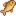
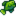
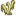

Логово жуков-мутантов
В логово жуков-мутантов нельзя попасть до конца игры. Вы попадёте туда, когда волшебник даст вам задание поговорить с Кробусом и найти Темный талисман. В логово можно попасть через канализацию.
Задание вы получите, когда вы закончите все узелки в городском клубе или проекты для Джоджа. Зайдите на железную дорогу, и запустится сцена с волшебником, который попросит вас принести Темный талисман. Талисман лежит в сундуке в логове жуков-мутантов. Поговорите с Кробусом в канализации, и он откроет для вас проход.
Пещера жуков-мутантов не очень большая, и найти сундук с талисманом легко. Будьте готовы сражаться, так как в логове обитает довольно много личинок-мутантов и мух-мутантов. Логово — единственное место в игре, где можно поймать слаймджека. Кроме него, там водится только карп. Рыбачить тут довольно опасно, потому что постоянно появляются новые мухи-мутанты и атакуют игрока.
Задания
| Название задания | Текст задания | Выдает | Требования | Награда |
|---|---|---|---|---|
| Темный талисман | Волшебник попросил меня достать волшебные чернила из дома его бывшей жены… но чтобы войти в этот дом, мне понадобится темный талисман. | Сценка на железной дороге после того, как вы завершите клуб или все задания для Джоджа. | Спуститесь в канализацию и расспросите Кробуса о темном талисмане. Найдите талисман в логове жуков-мутантов и возвращайтесь с ним в пещеру у железной дороги. |
|
Рыбалка
Слаймджек можно поймать только здесь. Карпа, Зеленую водоросль и Белую водоросоль также можно встретить. Каждую рыбу можно ловить круглый год.
Рыбачить здесь опасно из-за мух-мутантов, которые постоянно появляются и атакуют игрока.
| Время | |||||||||||||||||||||
|---|---|---|---|---|---|---|---|---|---|---|---|---|---|---|---|---|---|---|---|---|---|
| 6 | 7 | 8 | 9 | 10 | 11 | 12 | 13 | 14 | 15 | 16 | 17 | 18 | 19 | 20 | 21 | 22 | 23 | 00 | 01 | ||
|  Карп | |||||||||||||||||||||
|  Слаймджек | |||||||||||||||||||||
|  Белая водоросль | |||||||||||||||||||||
Галерея
Проход в канализации, который для вас откроет Кробус.
Сундук с талисманом.
История
- 1.1: Добавлено.
- 1.11: Сорняки в логове жуков-мутантов больше не меняются в зависимости от сезона и зимой не превращаются в аккумуляторы. Исправлена ошибка, из-за которой монстры в Логове жуков-мутантов могли становиться стандартными личинками/мухами после сохранения/перезагрузки игры.
- 1.4: Исправлены проблемные участки с водой, что сделало рыболовную зону более последовательной.
| Локации | |
|---|---|
| Локации | Автобусная остановка • Болото ведьмы • Вершина • Вулканическое подземелье • Глушь • Город Пеликан • Горы • Железная дорога • Имбирный остров • Канализация • Карьер • Карьерная шахта • Кладбище • Логово жуков-мутантов • Пепельносмольный лес • Пещера Черепа • Пещера на ферме • Пляж • Пустыня Калико • Тайный лес • Туннель • Ферма • Фермерский пруд • Шахта |